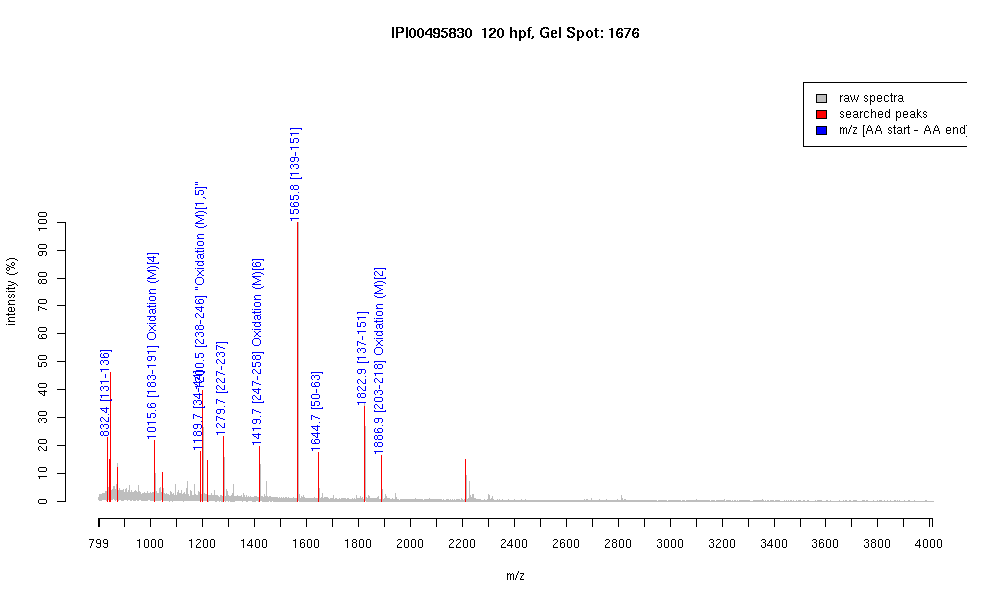

| Name | Apolipoprotein A-I precursor |
|---|---|
| MW | 30237.5 |
| PI | 5.06 |
| Mascot Protein Score | 175 |
| Masses (matched / unmatched) | 10 / 12 |

| Peptide | MZ (calc) | MZ (observed) | Error (DA) | Error (PPM) | Start | Stop | Modifications |
|---|---|---|---|---|---|---|---|
| HIDEYR | 832.3948 | 832.4111 | 0.0163 | 20 | 131 | 136 | |
| VVPMVEAVR | 1015.5604 | 1015.563 | 0.0026 | 3 | 183 | 191 | Oxidation (M)[4] |
| AAALVYLNQVK | 1189.6938 | 1189.6912 | -0.0026 | -2 | 34 | 44 | |
| MEPYMENVR | 1200.5023 | 1200.4952 | -0.0071 | -6 | 238 | 246 | "Oxidation (M)[1,5]" |
| IAPHTQDLQTR | 1279.6754 | 1279.6831 | 0.0077 | 6 | 227 | 237 | |
| TTFAQMYETIAK | 1419.6825 | 1419.6741 | -0.0084 | -6 | 247 | 258 | Oxidation (M)[6] |
| LEPVFQEYSALNR | 1565.7958 | 1565.8025 | 0.0067 | 4 | 139 | 151 | |
| ALDNLDGTDYEQYK | 1644.7388 | 1644.7426 | 0.0038 | 2 | 50 | 63 | |
| EKLEPVFQEYSALNR | 1822.9333 | 1822.9386 | 0.0053 | 3 | 137 | 151 | |
| TMAAPYAEEYKEQLVK | 1886.9204 | 1886.9169 | -0.0035 | -2 | 203 | 218 | Oxidation (M)[2] |